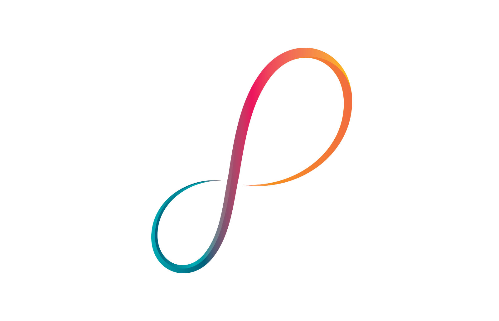
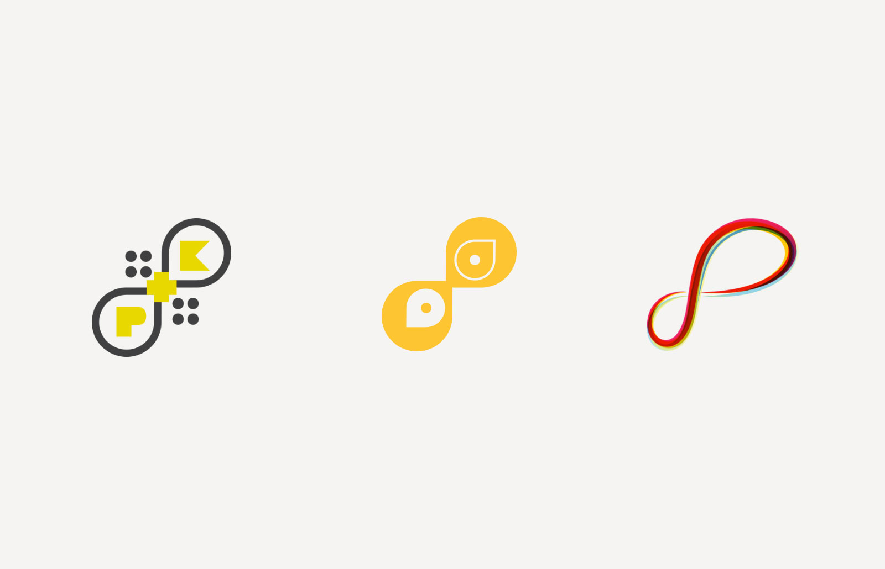
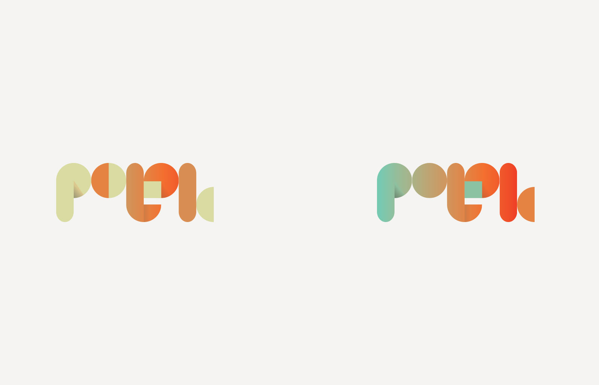
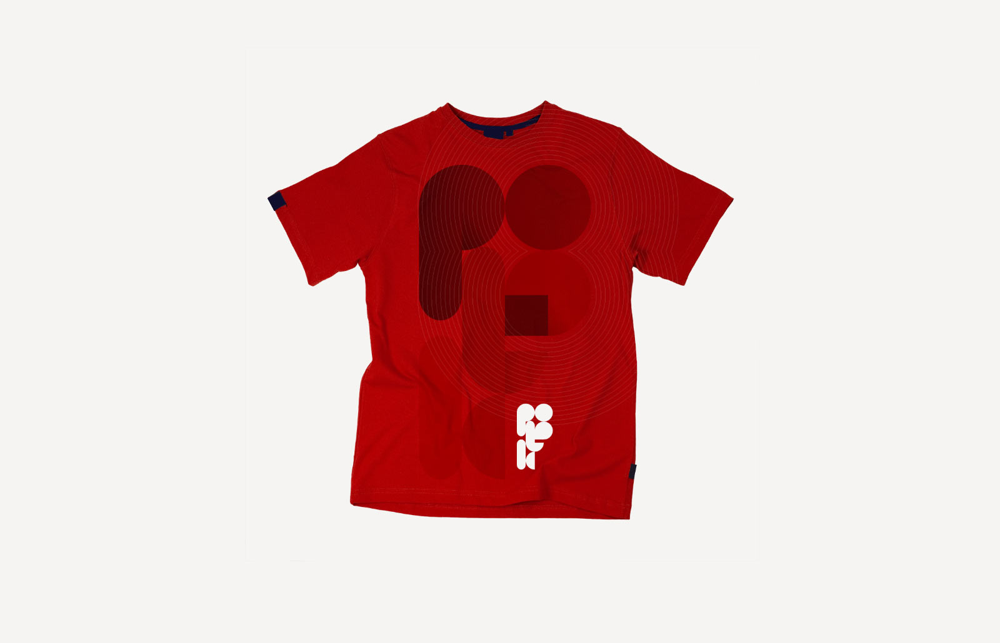
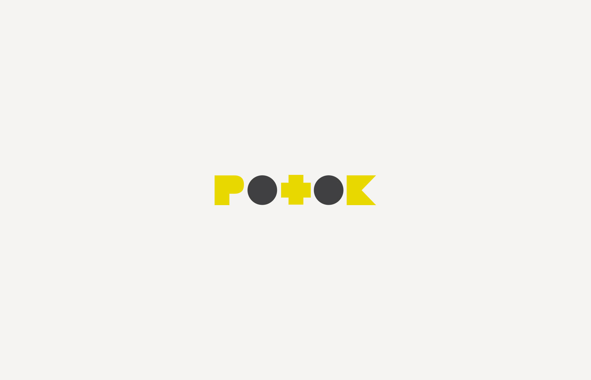
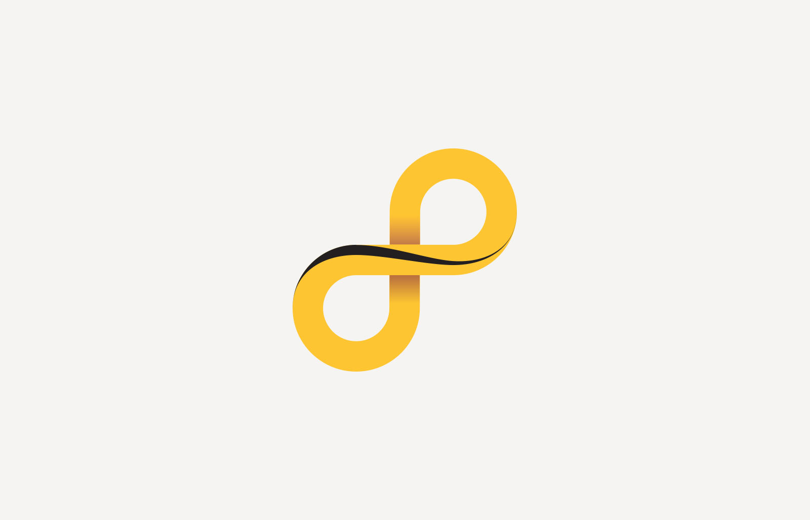
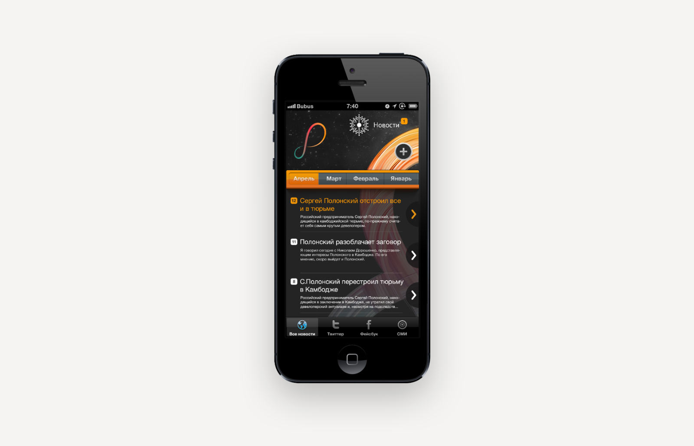

Редизайн логотипа знаменитой компании одного из самых известных девелоперов России — Сергея Полонского. Изначально знак «Потока» — повернутая на 45 градусов восьмерка.
Результат
Тщательно выверенные пропорции — золотое сечение, аккуратные грани и пластичность линий.

Первые версии — эволюция уже существующего знака.



Вторая итерация
Главным пожеланием Сергея был уход от шрифтовой формы к рукописной.
Еще немного процесса


Примеряем в интерфейс прототипа новостного приложения
